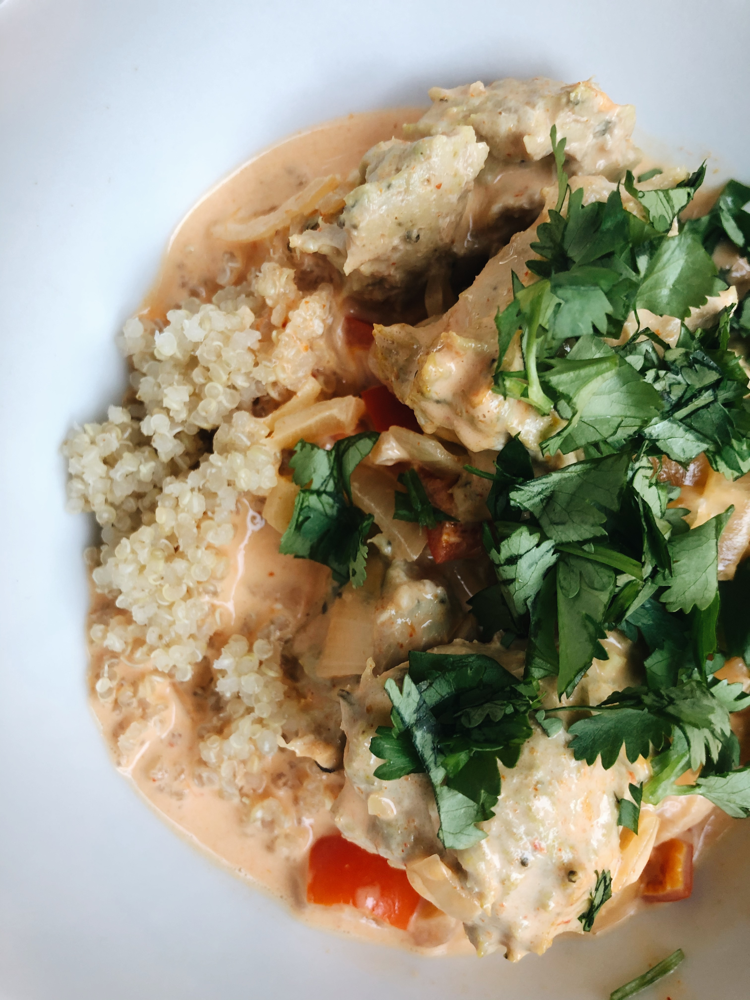
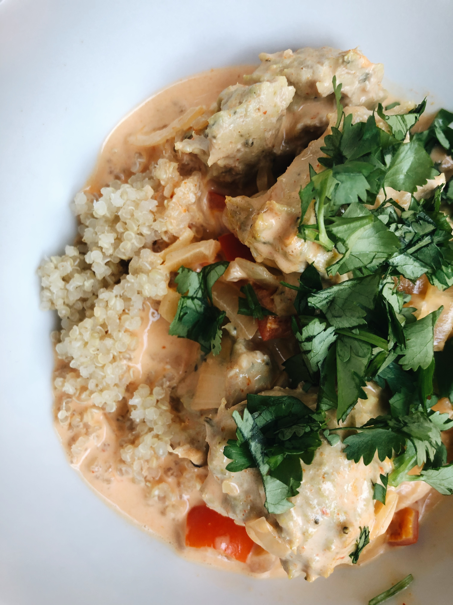

Sally H.
This place is amazing! All the waitressees are so welcoming and the food is too good to pass up. I really enjoyed the cozy vibe I got from the place. If you go, you HAVE to try to iced coffee. The coffee beans are straight from Columbia and their oat milk is freshly made. I cannot recommend this place enough!
Joe F.
You know a restaurant is good when other local business owners get food from the place; we figured this out as we waited for our order. The staff was friendly and most of the other people that came in were getting food to-go to bring back to their coworkers nearby.

 
